Команда ITимка · КосмоХакатон 2026 · Проектирование устойчивой спутниковой группировки
Constellation Resilience Lab
Рабочее место инженера группировки: считает доступность связи для северных пунктов, объясняет каждый перерыв, подбирает проверенную конфигурацию и показывает, сколько она стоит.
На фоне — живой расчёт по формулам «Описания данных»: орбиты, межспутниковые линии и маршруты до шлюза перестраиваются на каждом кадре.
Проблема
0 %видимость: над пунктом C70 почти всегда есть спутник
0 %доступность: сквозной маршрут до шлюза при ISL 2000 км
Спутник над головой — ещё не связь
Пункт видит аппарат, но данные не доходят: рвётся сеть между спутниками. Сервис раскладывает каждый из 272 отсчётов без пути по причине — и показывает, где именно теряется связь.
1нет видимого аппарата
8нет контакта со шлюзом
263разрыв межспутниковой сети
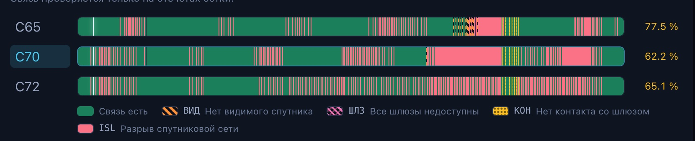
Временная шкала сценария 04. Красное — разрыв межспутниковой сети, жёлтое — нет контакта со шлюзом
Проблемапочему рвётся сеть
внутри плоскости0
между плоскостями0
маршрутов из 30
Почему при 2000 км кольцо исчезает
Соседи в плоскости стоят через 22,5°. Расстояние между ними — хорда, и фазирование плоскости её не меняет.
При ISL 2000 км все внутриплоскостные линии недоступны при любом RAAN и фазе — сеть держится только на межплоскостных контактах.
Для кольца нужно не менее 22 аппаратов в плоскости. Состав менять нельзя, поэтому 90 % при 2000 км — вопрос геометрии, а не подбора. Сервис говорит это честно, а не рисует красивую цифру.
Переключите дальность: считается та же модель, что в ядре.
Честность результатаориентир организаторов и наши числа
Ориентир 90 % достигнут с запасом, и это не предел
Организаторы задают одно число: не менее 90 % для каждого пункта. Конфигурация из данных даёт 96,67 % у худшего клиента, подбор фазирования при тех же 48 аппаратах — 99,17 %. Условия кейса не изменены.
Худший клиент · сценарий 01 · те же 48 аппаратов, пункты, ISL 3000 км, порог 10°
ориентир организаторов90 %
конфигурация из данных кейса96,67 %
после подбора RAAN и фаз99,17 %
Почему честный расчёт отличается от наивной оценки. По постановке клиент обслужен, если есть полный путь «пункт → спутники → шлюз»; видимость ещё не означает доставку. Модель с прямой видимостью шлюза занижает, модель с наземным транзитом завышает — наш ранний вариант 73,19 / 79,72 % отозван. Доступность всегда не больше видимости: 96,67 против 97,78 % у C65.
Откуда 99,17 %. Изменены только ориентация и фазирование плоскостей — параметры, которые описание данных называет проектными. Вариант перепроверен полным расчётом и валидатором.
Что мы не трогали
✓
Состав — 48 аппаратов, 3 плоскости по 16, очереди запуска как в файле
✓
Наземные пункты — C65, C70, C72 и единственный шлюз; новых шлюзов нет
✓
Условия связи и правила расчёта — дальность ISL, угол места, высота и наклонение, сферическая Земля, полуоткрытые интервалы
✓
Определение доступности — «клиент → активные спутники → доступный шлюз», без наземного транзита
Что разрешено менять — и что мы меняли
✓
RAAN и фазирование плоскостей — только в автоподборе, только у трёх плоскостей
✓
Очередь запуска и периоды отказов — как сценарии исследования, не как способ поднять цифру
✓
Всё остальное сервер блокирует на уровне API: правка запрещённого поля отклоняется с указанием поля
Сверка с организаторами
Их модуль, прогнанный целиком на 720 отсчётах четырёх сценариев, даёт ровно наши 12 доступностей и 12 перерывов; расхождение геометрии < 10⁻¹² км и 10⁻¹²°. Ориентир 90 % записан в самих файлах: target_availability = 0,9.
Продуктчто получает инженер
Один сервис — от загрузки проекта до обоснованного решения
Пять экранов покрывают полный цикл работы: загрузить, настроить, рассчитать, понять, сравнить и выбрать. Каждое число на экране — результат одного расчётного ядра, с хешем сценария и версией.
Проекты
Загрузка и версии
Четыре сценария кейса и любой свой файл той же схемы. Каждая правка — новая версия проекта, прежний расчёт остаётся для сравнения.
Конструктор
Настройка и расчёт
Очередь запуска, ориентация и фазирование плоскостей, отказы аппаратов. 3D-сцена, карта, временная шкала, объяснение каждого перерыва.
Сравнение
Выбор варианта
Два и более расчёта рядом: что изменилось, кто из пунктов выиграл, кто проиграл, и какой вариант рекомендован.
Устойчивость
Что сломается и где резерв
Отказ каждого аппарата по очереди, стресс-набор, кривая развёртывания, стратегии маршрутизации, рельеф вокруг площадки.
Оптимизация
Подбор конфигурации
Поиск ориентации и фазирования под целевую доступность с проверкой каждого кандидата полным расчётом.
Экономика
Сколько это стоит
Смета по очередям, стоимость владения, сравнение носителей и цена одного процентного пункта доступности.
docker compose up -d --build→стенд с загруженными сценариями→API и CLI для интеграции→выгрузка результата в формате кейса
Конструкторнастройка проекта
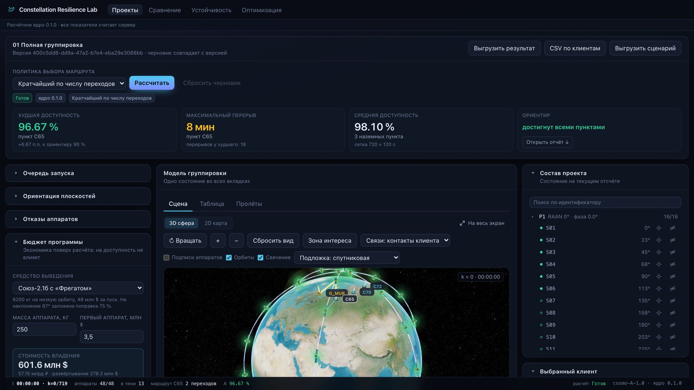
Конструктор после расчёта сценария «01 Полная группировка». Сводка показателей, очередь запуска, ориентация плоскостей, состав проекта
Весь проект настраивается в формах
✓
Очередь запуска Р1 / Р2 / Р3 одним переключателем.
✓
Ориентация и фазирование каждой плоскости — ползунок с шагом 0,1° и числовое поле.
✓
Отказы аппаратов — из списка или прямо с карточки на сцене.
✓
Итог сразу под кнопкой: худшая доступность, максимальный перерыв, статус ориентира 90 %.
✓
Ничего не теряется — правка создаёт новую версию, прежний расчёт остаётся для сравнения.
Конструкторсцена
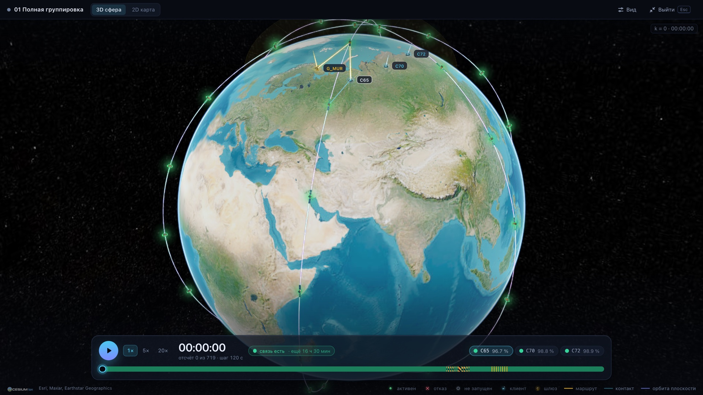
Полноэкранный режим по клавише F. Модель аппарата, орбиты плоскостей, свечение, плашка временной шкалы с дорожкой выбранного клиента
Сцена показывает ровно то, что посчитано
✓
3D-сфера и плоская карта — один расчёт, переключение в один клик. Без WebGL — векторная сцена и таблица.
✓
Состояние читается формой: активный залит, незапущенный контурный, отказавший перечёркнут.
✓
Маршрут и контакты клиента по умолчанию, полный граф — по желанию.
✓
Клик по узлу — карточка с данными и действиями: отказ с текущего отсчёта, выбор клиента, зона видимости.
Конструкторвременная шкала и разрывы
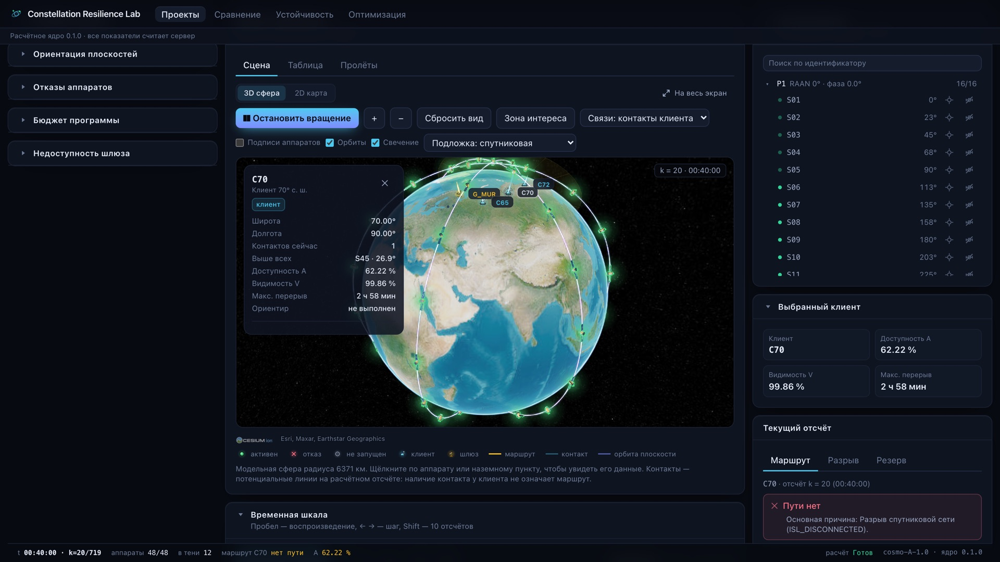
Сценарий 04, клиент C70, отсчёт 20. Контакт с аппаратом есть, пути до шлюза нет: разрыв межспутниковой сети. Карточка узла и карточка отсчёта с причиной
Каждый перерыв объяснён — и проверен
✓
Шкала с воспроизведением 1× / 5× / 20× и диаграммой доступности по каждому пункту, раскрашенной по причине.
✓
Четыре причины: нет видимого аппарата, все шлюзы недоступны, нет контакта со шлюзом, разрыв сети. Основная — всегда одна.
✓
Контрфактическая проверка: ядро возвращает отказавший аппарат и проверяет, восстановится ли путь.
✓
Резерв — независимые входы клиента в сеть и предупреждение об общей точке отказа.
Маршрут на соседнем отсчёте k = 19
C70 → S30 · 1 695 км · 11,9° · S30 → S14 · ISL 1 703 км S14 → G_MUR · 1 731 км · 11,3° · 3 перехода · 5 130 км
Сравнениевыбор варианта
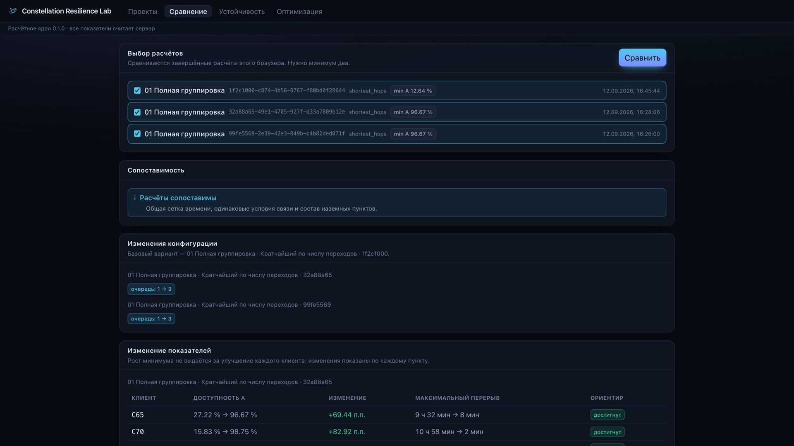
Экран «Сравнение». Проверка сопоставимости, изменения конфигурации и разница показателей по каждому пункту в процентных пунктах
Каждый клиент, а не средний процент
Первая очередь → полная · ориентир 90 %
C6527 → 97
C7016 → 99
C7213 → 99
Перерывы: 572 / 658 / 796 мин → 8 / 2 / 2 мин.
✓
Сопоставимость проверяется автоматически: разные сетки или условия связи помечаются явно.
✓
Рекомендация объяснена: минимум по клиентам → среднее → перерыв. Рост минимума не выдаётся за улучшение всех.
Устойчивостьотказ одного аппарата
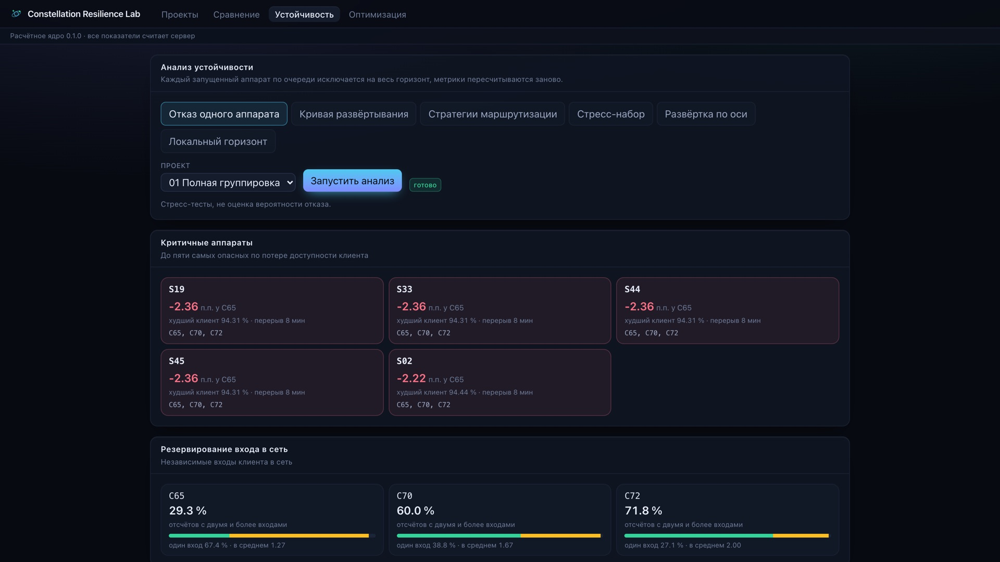
«Устойчивость» → «Отказ одного аппарата». Критичные аппараты с падением доступности, затронутые направления, резервирование входа в сеть по каждому пункту
Какие аппараты критичны — за 14 секунд
Каждый из 48 аппаратов по очереди исключается на весь горизонт. Ранжирование по худшему пункту, а не по среднему.
−2,36п.п. худший одиночный отказ · S19, S33, S44, S45 задевают все три направления
94,31 %остаётся у худшего клиента — ни один отказ не опускает группировку ниже 90 %
67,4 %времени у C65 единственный вход в сеть — самый уязвимый пункт
Доверие к числамкорректность и проверяемость
Модуль организаторов, прогнанный целиком, даёт ровно наши числа
< 10⁻¹²км и градусов расхождения с расчётным модулем организаторов на 120 отсчётах · уровень округления double · наборы связей идентичны
0,3 сполный расчёт суток · повторный расчёт даёт те же байты
294автотеста ядра, API, оптимизатора и интерфейса · golden-метрики
Модель — по правилам «Описания данных» без отступлений; результат проверяет независимый валидатор, отдельный от поиска пути.
Границы честные: линия ровно на пределе дальности — нет связи, угол ровно на пороге — контакт есть, интервал отказа полуоткрытый.
Сценарий
Пункт
Видимость
Доступность
Перерыв
01 Полная
C65
97,78 %
96,67 %
8 мин
C70
99,86 %
98,75 %
2 мин
C72
100,00 %
98,89 %
2 мин
02 Первая очередь
C65
38,19 %
27,22 %
572 мин
C70
48,75 %
15,83 %
658 мин
C72
58,47 %
12,64 %
796 мин
03 Отказы
C65
84,58 %
79,31 %
24 мин
C70
90,28 %
80,83 %
24 мин
C72
93,06 %
82,50 %
20 мин
04 ISL 2000
C65
97,78 %
77,50 %
94 мин
C70
99,86 %
62,22 %
178 мин
C72
100,00 %
65,14 %
4 мин
✓ — воспроизводится эталонным модулем организаторов на всех 720 отсчётах (и доступность, и перерывы) и закреплено golden-тестом в целых отсчётах. Исходный архив организаторов сверен с нашей копией по SHA-256: данные не правились.
Доверие к числамкак ищется маршрут
Маршрут ищется от шлюза и проверяется отдельно
Волна от шлюза. Аппараты с контактом к доступному шлюзу получают расстояние 1, волна идёт только по межспутниковым линиям, клиент берёт видимый аппарат с минимальным расстоянием. Один обход на отсчёт — для всех клиентов.
Наземный транзит запрещён. Путь строго «клиент → спутники → шлюз». Общий обход графа завышал доступность до 73,19 / 79,72 % — такие числа сервис не покажет.
Три стратегии — кратчайший по переходам, стабильный, кратчайший по километрам. Доступность одинаковая, различаются число переходов, длина и переключения: 1439 → 1369 → 1367.
Независимый валидатор проверяет каждую запись выгрузки: концы пути, уникальность узлов, активность и существование каждой линии на том же отсчёте.
Данные и интеграциясвои сценарии, выгрузка, API
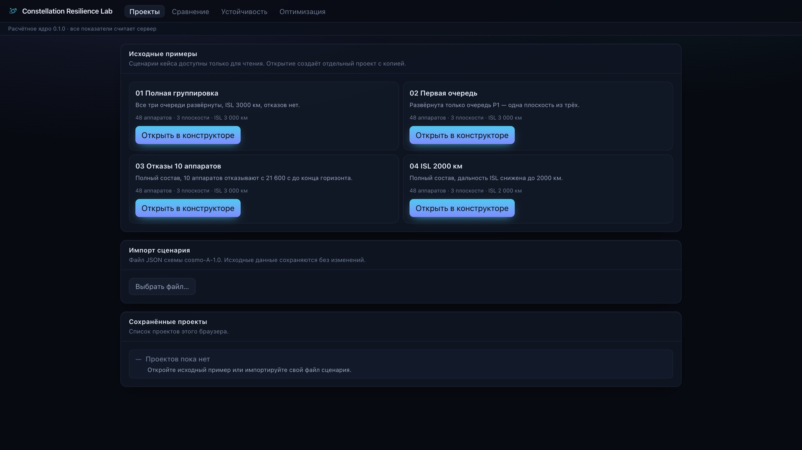
Экран «Проекты». Сценарии кейса только для чтения, импорт своего файла с проверкой и сводкой, список сохранённых проектов
Работает с вашими данными
✓
Любой сценарий схемы cosmo-A-1.0 — другое число плоскостей, аппаратов, пунктов, шаг и горизонт.
✓
Понятные ошибки — поле, код и сообщение. Из 17 испорченных файлов 16 отклонены с указанием поля.
✓
Исходный файл не меняется; цикл «выгрузка → загрузка» даёт тот же хеш и те же метрики.
✓
Выгрузка в формате кейса, CSV по клиентам, паспорт эксперимента для воспроизведения.
✓
HTTP-API и командная строка — расчёт, проверка, подбор без интерфейса; OpenAPI на /docs.
Сервис в работерабочее место и телефон
Скринкаст · рабочее место16 : 9 · вставить видео
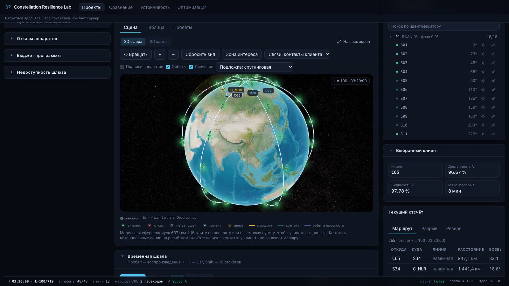
Телефон9 : 19,5 · вставить видео
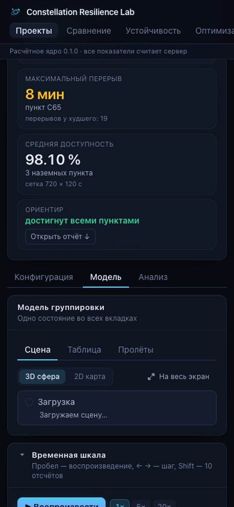
Сверх ожиданийпять анализов устойчивости
Что сломается, почему и где резерв
Кривая развёртывания — 12,64 → 61,81 → 96,67 %: ориентир достигается только с третьей очереди.
Стресс-набор — худший случай отключение плоскости: 60,97 %, перерыв 5,5 ч.
Стратегии — доступность одна, путь по расстоянию короче на 161 км.
Развёртка по оси — одной плоскостью номинал не улучшить: размах 1,11 п.п.
Кандидат применяется новой версией — ничего не перезаписывается.
96,67 →0 %штатные условия · перерыв 8 → 2 мин
62,22 →0 %ISL 2000 км при условии «штатный режим ≥ 90 %» · перерыв 178 → 80 мин
Сверх ожиданийML-ускоритель поиска
ML — измеренная польза, а не обещание
Модель предсказывает, какие углы стоит проверить следующими; каждый предложенный вариант подтверждается полным расчётом. Сравнили с точным поиском при равном бюджете и трёх зёрнах.
Метод · бюджет 48
seed 20260911
seed 7
seed 42
Среднее
Вердикт
Точный поиск (DE)
65,00
67,92
67,64
66,85
baseline
Гауссовский процесс
69,86
70,00
68,61
69,49
3 из 3 · +2,64 п.п. · проходит порог
CatBoost
65,69
67,92
65,42
66,34
1 из 3 · −0,51 п.п. · не проходит
Порог включения: средний выигрыш больше нуля и ни одного проигрыша хуже одного отсчёта. Ошибка модели считается только на точках, предложенных до их расчёта.
Что это значит для заказчика
Гауссовский процесс даёт +2,64 п.п. на коротком бюджете — быстрые исследования дешевле.
Прогноз и проверенные метрики хранятся раздельно: рекомендовать можно только проверенный вариант.
ML — отключаемый режим; итоговая рекомендация всегда считается точным поиском.
Модель обучается внутри одного исследования; для другого состава или сетки — новая модель.
Экономический слой поверх расчёта: состав, очереди и число пунктов берутся из проекта, цены задаёт инженер. На доступность и рекомендации не влияет.
278,3млн $ развёртывание · Союз-2.1б · по одному пуску на очередь
601,6млн $ стоимость владения за 10 лет · 57,15 млрд ₽
6,22млн $ за один процентный пункт доступности
472,0млн $ на попутном запуске Transporter · дешевле всех в каталоге
✓
Серия аппаратов по закону Райта: каждое удвоение выпуска удешевляет аппарат на 10 %.
✓
Выведение: выделенный пуск с поправкой на наклонение 87° или попутный запуск по массе; каталог из пяти носителей с источниками цен.
✓
Стоимость владения: развёртывание, страхование, наземный сегмент, эксплуатация и пополнение.
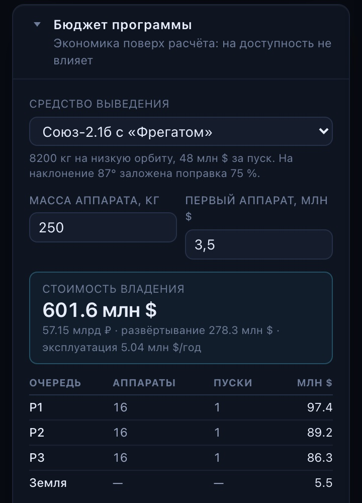
Конструктор → «Бюджет программы». Носитель, масса и цена первого аппарата, стоимость владения, смета по очередям
Сверх ожиданийсцена, шкала, инженерия
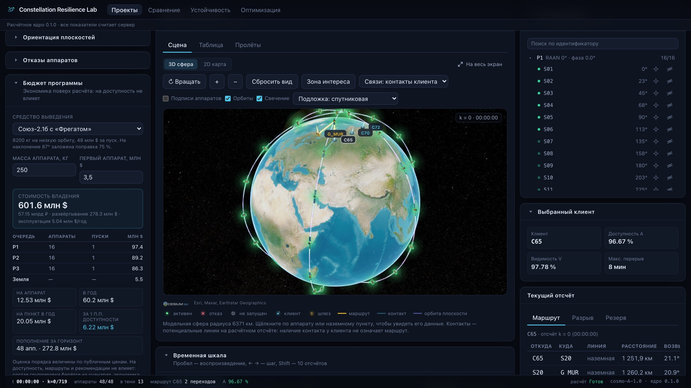
Конструктор: сцена и панель «Бюджет программы». Модель аппарата со свечением, орбиты плоскостей, маршрут выбранного клиента; слева — смета по очередям и стоимость владения
Детали, которые делают работу удобной
✓
Модель аппарата с панелями и антенной к Земле; шлейф орбиты и свечение, которое подсвечивает аппараты и линии, а не дневную Землю.
✓
Шкала по реальному времени — такт 250 мс, снимки подгружаются заранее.
✓
Пролёты — восходы, кульминации и заходы по каждому пункту.
✓
Инженерные выводы с доказательством и переходом к экрану; паспорт эксперимента для воспроизведения.
✓
Надёжность: отмена останавливает расчёт, прогресс потоком, повтор запроса не создаёт второй расчёт.
Рекомендацияитоговый выбор проекта
Рекомендация: вариант, который не платит номиналом за стресс
Конфигурация · exact Run, verified
Плоскость
RAAN
Фаза
P1
191,64°
169,13°
P2
67,54°
178,32°
P3
124,36°
94,64°
Ограничение поиска: каждый клиент в штатном режиме ≥ 90 %. Состав 48, пункты и условия связи — как в исходном проекте.
Что выигрываем
Штатный режим: 96,94 / 98,89 / 99,31 %, перерыв 8 → 2 мин — ни один клиент не проигрывает.
Сценарий 10 отказов теряет ≈ 2 п.п. и 6 минут перерыва.
При ISL 2000 км 90 % не достигаются ни в одном из 300 вариантов: хорда 2700 км. Статус — target_not_found_within_budget, не «недостижимо».
Чувствительность к сетке: 69,17 % на 120 с, 66,60 % на 60 с, 65,73 % на 30 с — десятые доли не заявляем.
Модель геометрическая: без радиобюджета и пропускной способности; задержка — только нижняя оценка.
Как повысить устойчивость — в порядке проверенности
1 · Применить найденное фазирование как новую ревизию. 2 · Держать резерв для S19 / S33 / S44 / S45 — они бьют по всем трём направлениям. 3 · Для C65 нужен второй независимый вход и проверка локального горизонта площадки (рельеф даёт до −19,72 п.п.): это следующий рычаг исследования, а не подмена дальности ISL или добавление шлюза.
Итогчто получает заказчик
Решения о группировке — на расчётах, а не на ощущениях
Проектирование
Варианты за минуты
Очередь, ориентация, фазирование, отказы — в формах. Каждый вариант сохраняется версией и сравнивается по каждому пункту.
Устойчивость
Известно, что сломается
Критичные аппараты, единственные входы в сеть, стресс-сценарии, рельеф площадки — до запуска, а не после.
Обоснованность
Рекомендация с ценой и границами
Только проверенные расчёты, честный статус «цель не найдена в бюджете», условия достижения 90 % и ограничения модели.
Доверие
Числа проверяемы
Сверка с эталонным модулем организаторов, golden-тесты в целых отсчётах, независимый валидатор, паспорт эксперимента для воспроизведения.
Интеграция
Свои данные и выгрузка
Любой сценарий той же схемы, выгрузка в формате кейса, HTTP-API и командная строка, запуск одной командой.
Экономика
Цена процентного пункта
Смета, стоимость владения и сравнение носителей рядом с доступностью — один экран для инженера и для бюджета.
Командакто сделал сервис
Команда ITимка
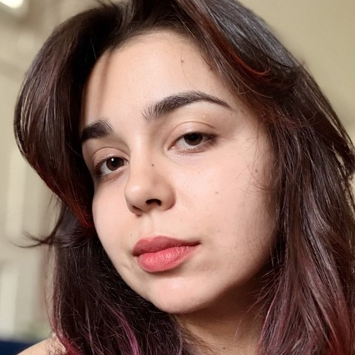
Чудинова
Полина Александровна
Капитан · Backend
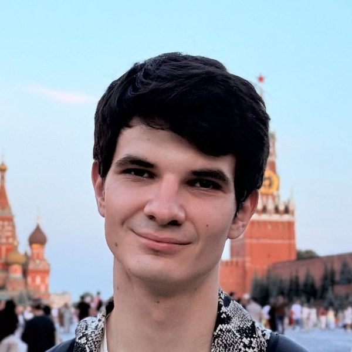
Вознюк
Михаил Владимирович
Frontend
Редин
Андрей Алексеевич
DevOps
Василевич
Михаил Константинович
Дизайн
Четыре человека, один сервис: расчётное ядро и API, интерфейс конструктора и сцены, развёртывание стенда, визуальный язык продукта.
Constellation Resilience Lab · команда ITимка · КосмоХакатон 2026
1 / 23
Сейчас на экране
Речь
Время · лимит 4:00
0:00
Следующий слайд
Управление
← → или пробел — листать оба окна синхронно. Это окно держите рядом с основной вкладкой, на проектор выводите основное окно. Если окна рассинхронились — перейдите на слайд в основном окне.